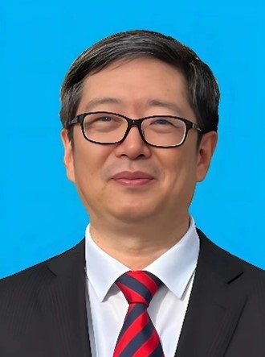
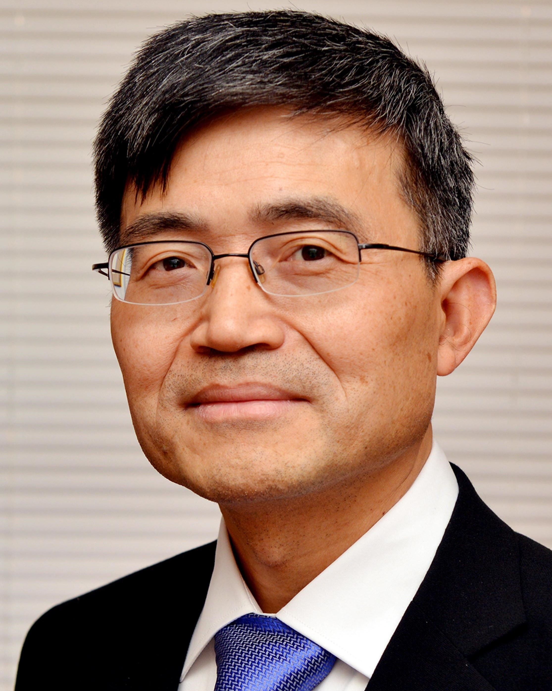

大会报告
|  |
报告人: 郭雷院士 (北京航空航天大学) |
| 题目: 仿生智能无人系统：从方法、系统到行为 | |
| 摘要: 目前，无人系统面临的技术瓶颈在于突破“预设任务、理想环境、确定模式”的藩篱，并实现在“危极特恶”（危险、极端、特殊、恶劣）环境下的精确、可靠与自主控制。物竞天择，适者生存，经过亿万年的进化，动物具备了强大而睿智的生存能力，能够在危极特恶环境下应对自如。与此类似，在干扰对抗环境下，无人系统的智能性并不仅限于熟知的“类脑智能”，而是体现在多约束、高动态、强对抗条件下的生存能力。本报告从多源干扰系统的估计与控制理论出发，介绍了干扰对抗环境下无人系统仿生智能系统的理论和技术研究框架，并阐述了本研究团队在仿生智能核心技术——如仿生导航、仿生操控和智能控制系统等方面取得的研究进展。最后，从方法论、系统论和行为论的角度，探讨了仿生智能技术在安全、绿色和免疫等领域的基本内涵和未来发展方向。 |
|  |
报告人: 姜钟平 (美国纽约大学) |
| 题目: 非线性小增益理论及其应用 | |
| 摘要: 世界是非线性的和关联的。网络科学中的两个基本问题是：复杂动态网络何时是鲁棒稳定？如何设计反馈控制使不稳定的网络鲁棒稳定？本学术报告将回顾小增益理论的往事今生，并深入探讨小增益理论为何是解决上述两个基本问题的一个系统性工具。同时，报告人将汇报如何使用小增益理论去解决事件触发非线性控制和分布式反馈优化中悬而未决的问题。最后，如果时间容许，报告人将简要介绍控制理论中的一个新方向: 基于学习的控制。 | |
| 报告人: Martin Guay (加拿大女王大学) | |
| 题目: Data-driven Control of Unknown Nonlinear Systems Using Extremum Seeking | |
| 摘要: The complexity of system dynamics can often be an obstacle in the development of reliable dynamical models. In classical control engineering methodologies, the knowledge of the system's dynamics has always been a key element in the design, testing and implementation of control systems. Since the development of reliable dynamical models is often restrictively onerous and fraught with technical and experimental difficulties, the access of high-quality dynamical models is often limited. The last ten years has seen a tremendous amount of research activity on the development of model free control techniques. One leading technique is extremum-seeking control (ESC). This technique has been applied extensively in many application areas such as biomedical engineering, aerospace engineering, automotive, biotechnology and process control. In this presentation, we seek to review some of the new developments on the generalization of extremum seeking control as a data-driven controller design technique. It is shown how one can apply this technique to design reliable control systems that require only limited knowledge of the system dynamics. Several applications are presented to demonstrate the versatility of this technique. | |